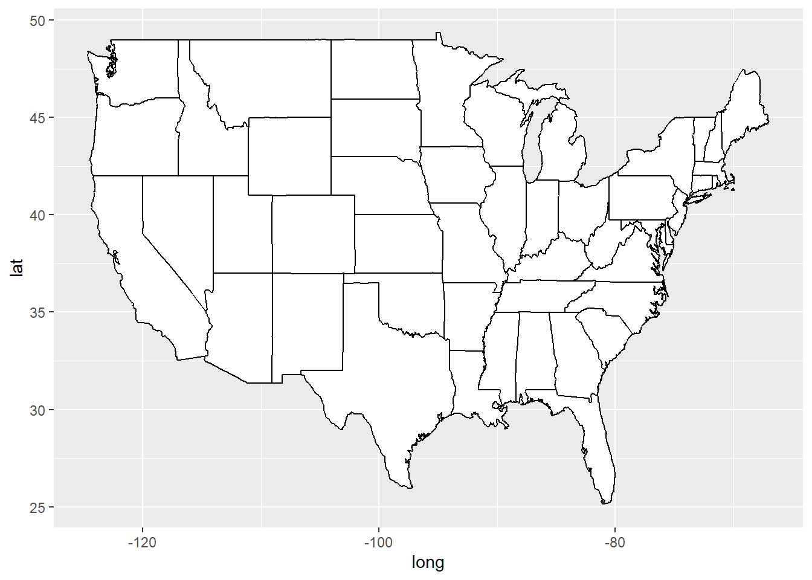
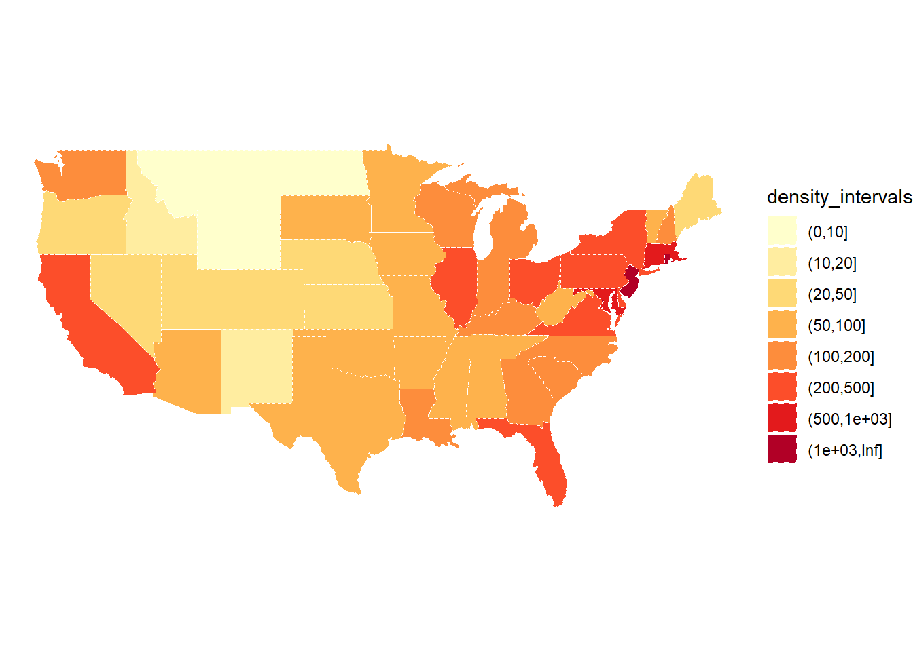

# Initial packages required (we'll be adding more)
library(tidyverse)
library(mdsr) # package associated with our MDSR bookCreating informative maps
You can download this .qmd file from here. Just hit the Download Raw File button.
Choropleth Maps
When you have specific regions (e.g. countries, states, counties, census tracts,…) and a value associated with each region.
A choropleth map will color the entire region according to the value. For example, let’s consider state vaccination data from March 2021.
vaccines <- read_csv("https://proback.github.io/264_fall_2024/Data/vacc_Mar21.csv")
vacc_mar13 <- vaccines |>
filter(Date =="2021-03-13") |>
select(State, Date, people_vaccinated_per100, share_doses_used, Governor)
vacc_mar13# A tibble: 50 × 5
State Date people_vaccinated_per100 share_doses_used Governor
<chr> <date> <dbl> <dbl> <chr>
1 Alabama 2021-03-13 17.2 0.671 R
2 Alaska 2021-03-13 27.0 0.686 R
3 Arizona 2021-03-13 21.5 0.821 R
4 Arkansas 2021-03-13 19.2 0.705 R
5 California 2021-03-13 20.3 0.726 D
6 Colorado 2021-03-13 20.8 0.801 D
7 Connecticut 2021-03-13 26.2 0.851 D
8 Delaware 2021-03-13 20.2 0.753 D
9 Florida 2021-03-13 20.1 0.766 R
10 Georgia 2021-03-13 15.2 0.674 R
# ℹ 40 more rowsThe tricky part of choropleth maps is getting the shapes (polygons) that make up the regions. This is really a pretty complex set of lines for R to draw!
Luckily, some maps are already created in R in the maps package.
library(maps)
us_states <- map_data("state")
head(us_states) long lat group order region subregion
1 -87.46201 30.38968 1 1 alabama <NA>
2 -87.48493 30.37249 1 2 alabama <NA>
3 -87.52503 30.37249 1 3 alabama <NA>
4 -87.53076 30.33239 1 4 alabama <NA>
5 -87.57087 30.32665 1 5 alabama <NA>
6 -87.58806 30.32665 1 6 alabama <NA>us_states |>
ggplot(mapping = aes(x = long, y = lat,
group = group)) +
geom_polygon(fill = "white", color = "black")
vacc_mar13 <- vacc_mar13 |>
mutate(State = str_to_lower(State))
vacc_mar13 <- vacc_mar13 |>
mutate(State = str_replace(State, " state", ""))library(viridis) # for color schemes
vacc_mar13 |>
right_join(us_states, by = c("State" = "region")) |>
rename(region = State) |>
ggplot(mapping = aes(x = long, y = lat,
group = group)) +
geom_polygon(aes(fill = people_vaccinated_per100), color = "black") +
labs(fill = "People Vaccinated\nper 100 pop.") +
1 coord_map() +
2 theme_void() +
3 scale_fill_viridis()- 1
- This scales the longitude and latitude so that the shapes look correct. coord_quickmap() can also work here - it’s less exact but faster.
- 2
- This theme can give you a really clean look
- 3
- You can change the fill scale for different color schemes.
You can also use a categorical variable to color regions:
vacc_mar13 |>
right_join(us_states, by = c("State" = "region")) |>
rename(region = State) |>
ggplot(mapping = aes(x = long, y = lat,
group = group)) +
geom_polygon(aes(fill = Governor), color = "darkgrey", linewidth = 0.2) +
labs(fill = "Governor") +
coord_map() +
theme_void() +
1 scale_fill_manual(values = c("blue", "red"))- 1
- You can change the fill scale for different color schemes.
Multiple maps!
You can still use data viz tools from Data Science 1 (like facetting) to create things like time trends in maps:
library(lubridate)
weekly_vacc <- vaccines |>
mutate(State = str_to_lower(State)) |>
mutate(State = str_replace(State, " state", ""),
week = week(Date)) |>
group_by(week, State) |>
summarize(date = first(Date),
mean_daily_vacc = mean(daily_vaccinated/est_population*1000)) |>
right_join(us_states, by =c("State" = "region")) |>
rename(region = State)
weekly_vacc |>
filter(week > 2, week < 11) |>
ggplot(mapping = aes(x = long, y = lat,
group = group)) +
geom_polygon(aes(fill = mean_daily_vacc), color = "darkgrey",
linewidth = 0.1) +
labs(fill = "Weekly Average Daily Vaccinations per 1000") +
coord_map() +
theme_void() +
scale_fill_viridis() +
facet_wrap(~date) +
theme(legend.position = "bottom") Other cool state maps
statebin (square representation of states)
library(statebins) # may need to install
vacc_mar13 |>
mutate(State = str_to_title(State)) |>
statebins(state_col = "State",
value_col = "people_vaccinated_per100") +
1 theme_statebins() +
labs(fill = "People Vaccinated per 100")- 1
- One nice layout. You can customize with usual ggplot themes.
I used this example to create the code above. The original graph is located here.
Interactive point maps with leaflet
To add even more power and value to your plots, we can add interactivity. For now, we will use the leaflet package, but later in the course we will learn even more powerful and flexible approaches for creating interactive plots and webpages.
For instance, here is a really simple plot with a pop-up window:
library(leaflet)
leaflet() |>
1 addTiles() |>
2 setView(-93.1832, 44.4597, zoom = 17) |>
3 addPopups(-93.1832, 44.4597, 'Here is the <b>Regents Hall of Mathematical Sciences</b>, home of the Statistics and Data Science program at St. Olaf College')- 1
- addTiles() uses OpenStreetMap, an awesome open-source mapping resource, as the default tile layer (background map)
- 2
- setView() centers the map at a specific latitude and longitude, then zoom controls how much of the surrounding area is shown
- 3
- add a popup message (with html formatting) that can be clicked on or off
Leaflet is not part of the tidyverse, but the structure of its code is pretty similar and it also plays well with piping.
Let’s try pop-up messages with a data set containing Airbnb listings in the Boston area:
leaflet() |>
addTiles() |>
setView(lng = mean(airbnb.df$Long), lat = mean(airbnb.df$Lat),
zoom = 13) |>
addCircleMarkers(data = airbnb.df,
lat = ~ Lat,
lng = ~ Long,
popup = ~ AboutListing,
radius = ~ S_Accomodates,
# These last options describe how the circles look
weight = 2,
color = "red",
fillColor = "yellow")Interactive choropleth maps with leaflet
A preview to shapefiles and the sf package
1library(sf)
2states <- read_sf("https://rstudio.github.io/leaflet/json/us-states.geojson")
3class(states)
states- 1
-
sfstands for “simple features” - 2
- From https://leafletjs.com/examples/choropleth/us-states.js
- 3
-
Note that
stateshas classsfin addition to the usualtblanddf
[1] "sf" "tbl_df" "tbl" "data.frame"
Simple feature collection with 52 features and 3 fields
Geometry type: MULTIPOLYGON
Dimension: XY
Bounding box: xmin: -188.9049 ymin: 17.92956 xmax: -65.6268 ymax: 71.35163
Geodetic CRS: WGS 84
# A tibble: 52 × 4
id name density geometry
<chr> <chr> <dbl> <MULTIPOLYGON [°]>
1 01 Alabama 94.6 (((-87.3593 35.00118, -85.60667 34.98475…
2 02 Alaska 1.26 (((-131.602 55.11798, -131.5692 55.28229…
3 04 Arizona 57.0 (((-109.0425 37.00026, -109.048 31.33163…
4 05 Arkansas 56.4 (((-94.47384 36.50186, -90.15254 36.4963…
5 06 California 242. (((-123.2333 42.00619, -122.3789 42.0116…
6 08 Colorado 49.3 (((-107.9197 41.00391, -105.729 40.99843…
7 09 Connecticut 739. (((-73.05353 42.03905, -71.79931 42.0226…
8 10 Delaware 464. (((-75.41409 39.80446, -75.5072 39.68396…
9 11 District of Columbia 10065 (((-77.03526 38.99387, -76.90929 38.8952…
10 12 Florida 353. (((-85.49714 30.99754, -85.00421 31.0030…
# ℹ 42 more rowsFirst we’ll start with a static plot using a simple features object and geom_sf():
# Create density bins as on the webpage
state_plotting_sf <- states |>
mutate(density_intervals = cut(density, n = 8,
breaks = c(0, 10, 20, 50, 100, 200, 500, 1000, Inf))) |>
filter(!(name %in% c("Alaska", "Hawaii", "Puerto Rico")))
ggplot(data = state_plotting_sf) +
geom_sf(aes(fill = density_intervals), colour = "white", linetype = 2) +
# geom_sf_label(aes(label = density)) + # labels too busy here
theme_void() +
scale_fill_brewer(palette = "YlOrRd") 
Now let’s use leaflet to create an interactive plot!
# Create our own category bins for population densities
# and assign the yellow-orange-red color palette
bins <- c(0, 10, 20, 50, 100, 200, 500, 1000, Inf)
pal <- colorBin("YlOrRd", domain = states$density, bins = bins)
# Create labels that pop up when we hover over a state. The labels must
# be part of a list where each entry is tagged as HTML code.
library(htmltools)
library(glue)
states <- states |>
mutate(labels = str_c(name, ": ", density, " people / sq mile"))
# If want more HTML formatting, use these lines instead of those above:
#states <- states |>
# mutate(labels = glue("<strong>{name}</strong><br/>{density} people / #mi<sup>2</sup>"))
labels <- lapply(states$labels, HTML)
leaflet(states) %>%
setView(-96, 37.8, 4) %>%
addTiles() %>%
addPolygons(
fillColor = ~pal(density),
weight = 2,
opacity = 1,
color = "white",
dashArray = "3",
fillOpacity = 0.7,
highlightOptions = highlightOptions(
weight = 5,
color = "#666",
dashArray = "",
fillOpacity = 0.7,
bringToFront = TRUE),
label = labels,
labelOptions = labelOptions(
style = list("font-weight" = "normal", padding = "3px 8px"),
textsize = "15px",
direction = "auto")) %>%
addLegend(pal = pal, values = ~density, opacity = 0.7, title = NULL,
position = "bottomright")